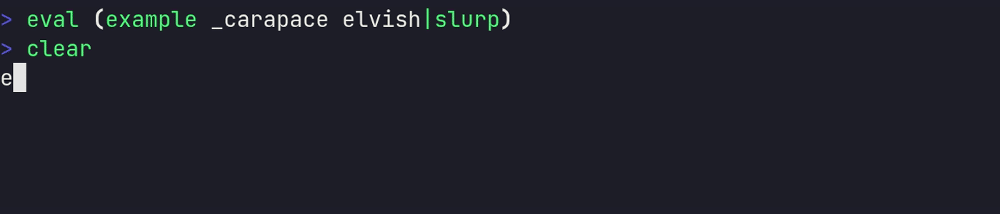
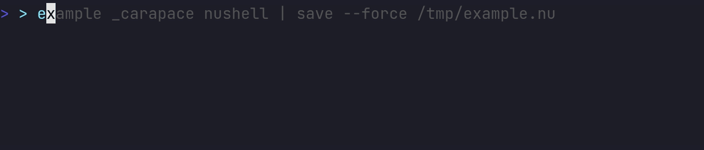
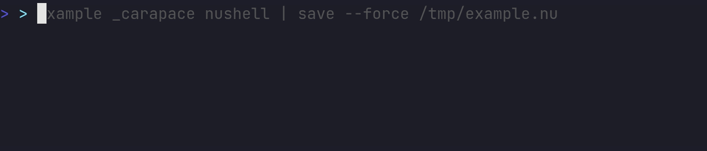

carapace
carapace is a command-line completion generator for spf13/cobra with support for:
Gen
Calling Gen on the root command is sufficient to enable completion script generation using the Hidden Subcommand.
import (
"github.com/carapace-sh/carapace"
)
carapace.Gen(rootCmd)
Additionally invoke carapace.Test in a test to verify configuration during build time.
func TestCarapace(t *testing.T) {
carapace.Test(t)
}
Hidden Subcommand
When Gen is invoked a hidden subcommand (_carapace) is added. This handles completion script generation and callbacks.
Completion
SHELL is optional and will be detected by parent process name.
command _carapace [SHELL]
# bash
source <(command _carapace)
# cmd (~/AppData/Local/clink/{command}.lua
load(io.popen('command _carapace cmd-clink'):read("*a"))()
# elvish
eval (command _carapace | slurp)
# fish
command _carapace | source
# nushell (update config.nu according to output)
command _carapace nushell
# oil
source <(command _carapace)
# powershell
Set-PSReadLineOption -Colors @{ "Selection" = "`e[7m" }
Set-PSReadlineKeyHandler -Key Tab -Function MenuComplete
command _carapace | Out-String | Invoke-Expression
# tcsh
set autolist
eval `command _carapace tcsh`
# xonsh
COMPLETIONS_CONFIRM=True
exec($(command _carapace))
# zsh
source <(command _carapace)
Directly sourcing multiple completions in your shell init script increases startup time considerably. See lazycomplete for a solution to this problem.
DashAnyCompletion
DashAnyCompletion defines completion for any positional arguments after -- (dash) not already defined.
carapace.Gen(rootCmd).DashAnyCompletion(
carapace.ActionValues("dAny", "dashAny"),
)
DashCompletion
DashCompletion defines completion for positional arguments after -- (dash).
carapace.Gen(rootCmd).DashCompletion(
carapace.ActionValues("d1", "dash1"),
carapace.ActionValues("d2", "dash2"),
)
FlagCompletion
FlagCompletion defines completion for flags.
carapace.Gen(myCmd).FlagCompletion(carapace.ActionMap{
"flagName": carapace.ActionValues("a", "b", "c"),
})
Optional argument
To mark a flag argument as optional (--name=value) the NoOptDefVal needs to be set to anything other than empty string.
rootCmd.Flag("optarg").NoOptDefVal = " "
PositionalAnyCompletion
PositionalAnyCompletion defines completion for any positional argument not already defined.
carapace.Gen(rootCmd).PositionalAnyCompletion(
carapace.ActionValues("posAny", "positionalAny"),
)
PositionalCompletion
PositionalCompletion defines completion for positional arguments.
carapace.Gen(rootCmd).PositionalCompletion(
carapace.ActionValues("pos1", "positional1"),
carapace.ActionValues("pos2", "positional2"),
)
PreInvoke
PreInvoke is called after arguments are parsed and allows generic modification of an Action before it is invoked.
carapace.Gen(rootCmd).PreInvoke(func(cmd *cobra.Command, flag *pflag.Flag, action carapace.Action) carapace.Action {
return action.Chdir(rootCmd.Flag("chdir").Value.String())
})
PreRun
PreRun is called before arguments are parsed for the current command and allows modification of its structure.
carapace.Gen(rootCmd).PreRun(func(cmd *cobra.Command, args []string) {
pluginCmd := &cobra.Command{
Use: "plugin",
Short: "dynamic plugin command",
GroupID: "plugin",
Run: func(cmd *cobra.Command, args []string) {},
}
carapace.Gen(pluginCmd).PositionalCompletion(
carapace.ActionValues("pl1", "pluginArg1"),
)
cmd.AddCommand(pluginCmd)
})
Snippet
Standalone
Action
An Action indicates how to complete a flag or a positional argument.
Cache
Cache caches an Action for a given duration.
carapace.ActionCallback(func(c carapace.Context) carapace.Action {
return carapace.ActionValues(
time.Now().Format("15:04:05"),
)
}).Cache(5 * time.Second)
Caches are implicitly assigned a unique key using
runtime.Callerwhich can change between releases.
Key
Additional keys like key.String can be passed as well.
carapace.ActionMultiParts("/", func(c carapace.Context) carapace.Action {
switch len(c.Parts) {
case 0:
return carapace.ActionValues("one", "two").Suffix("/")
case 1:
return carapace.ActionCallback(func(c carapace.Context) carapace.Action {
return carapace.ActionValues(
time.Now().Format("15:04:05"),
)
}).Cache(10*time.Second, key.String(c.Parts[0]))
default:
return carapace.ActionValues()
}
})
Location
Cache is written as json to os.UserCacheDir using the Export format.
{{cacheDir}}/carapace/{{binary}}/{{callerChecksum}}/{{cacheChecksum}}
| ID | x | example |
|---|---|---|
| cacheDir | os.UserCacheDir | ~/.cache/ |
| binary | binary name | carapace |
| callerChecksum | sha1sum using runtime.Caller | 89be88b670885d3d7855c7169ad7cfd2816a6c37 |
| cacheChecksum | sh1sum of given CacheKeys | 041858daaaa8b084122d4604a3223315c39edc3e |
Chdir
Chdir changes the working directory.
carapace.ActionFiles().Chdir("/tmp")
ChdirF
ChdirF is like ChDir but uses a function.
carapace.ActionFiles().ChdirF(traverse.GitWorkTree)
Filter
Filter filters given values.
carapace.ActionValuesDescribed(
"1", "one",
"2", "two",
"3", "three",
"4", "four",
).Filter("2", "4")
FilterArgs
FilterArgs filters Context.Args.
carapace.ActionValues(
"one",
"two",
"three",
).FilterArgs()
FilterParts
FilterParts filters Context.Parts.
carapace.ActionMultiParts(",", func(c carapace.Context) carapace.Action {
return carapace.ActionValues(
"one",
"two",
"three",
).FilterParts()
})
Invoke
Invoke explicitly executes the callback of an Action.
carapace.ActionCallback(func(c carapace.Context) carapace.Action {
switch {
case strings.HasPrefix(c.Value, "file://"):
c.Value = strings.TrimPrefix(c.Value, "file://")
case strings.HasPrefix("file://", c.Value):
c.Value = ""
default:
return carapace.ActionValues()
}
return carapace.ActionFiles().Invoke(c).Prefix("file://").ToA()
})
List
List creates a list with given divider.
carapace.ActionValues(
"one",
"two",
"three"
).List(",")
MultiParts
MultiParts completes values splitted by given delimiter(s) separately.
carapace.ActionValues(
"dir/subdir1/fileA.txt",
"dir/subdir1/fileB.txt",
"dir/subdir2/fileC.txt",
).MultiParts("/")
MultiPartsP
MultiPartsP is like MultiParts but with placeholders.
carapace.ActionStyledValuesDescribed(
"keys/<key>", "key example", style.Default,
"keys/<key>/<value>", "key/value example", style.Default,
"styles/custom", "custom style", style.Of(style.Blue, style.Blink),
"styles", "list", style.Yellow,
"styles/<style>", "details", style.Default,
).MultiPartsP("/", "<.*>", func(placeholder string, matches map[string]string) carapace.Action {
switch placeholder {
case "<key>":
return carapace.ActionValues("key1", "key2")
case "<style>":
return carapace.ActionStyles()
case "<value>":
switch matches["<key>"] {
case "key1":
return carapace.ActionValues("val1", "val2")
case "key2":
return carapace.ActionValues("val3", "val4")
default:
return carapace.ActionValues()
}
default:
return carapace.ActionValues()
}
})
NoSpace
NoSpace disables space suffix for given character(s).
carapace.ActionValues(
"one,",
"two/",
"three",
).NoSpace(',', '/')
Prefix
Prefix adds a prefix to the inserted values.
carapace.ActionFiles().Prefix("file://")
Retain
Retain retains given values.
carapace.ActionValuesDescribed(
"1", "one",
"2", "two",
"3", "three",
"4", "four",
).Retain("2", "4")
Shift
Shift shifts positional arguments left n times.
carapace.ActionCallback(func(c carapace.Context) carapace.Action {
return carapace.ActionMessage("%#v", c.Args)
}).Shift(1)
Split
Split splits Context.Value lexicographically and replaces Context.Args with the tokens.
carapace.ActionCallback(func(c carapace.Context) carapace.Action {
cmd := &cobra.Command{}
carapace.Gen(cmd).Standalone()
cmd.Flags().BoolP("bool", "b", false, "bool flag")
cmd.Flags().StringP("string", "s", "", "string flag")
carapace.Gen(cmd).FlagCompletion(carapace.ActionMap{
"string": carapace.ActionValues("one", "two", "three"),
})
carapace.Gen(cmd).PositionalCompletion(
carapace.ActionValues("pos1", "positional1"),
carapace.ActionFiles(),
)
return carapace.ActionExecute(cmd)
}).Split()
SplitP
SplitP is like Split but supports pipelines.
carapace.ActionCallback(func(c carapace.Context) carapace.Action {
cmd := &cobra.Command{}
carapace.Gen(cmd).Standalone()
cmd.Flags().BoolP("bool", "b", false, "bool flag")
cmd.Flags().StringP("string", "s", "", "string flag")
carapace.Gen(cmd).FlagCompletion(carapace.ActionMap{
"string": carapace.ActionValues("one", "two", "three"),
})
carapace.Gen(cmd).PositionalCompletion(
carapace.ActionValues("pos1", "positional1"),
carapace.ActionFiles(),
)
return carapace.ActionExecute(cmd)
}).SplitP()
Style
Style sets the style for all values.
carapace.ActionValues(
"one",
"two",
).Style(style.Green)
StyleF
StyleF sets the style for all values using a function.
carapace.ActionValues(
"one",
"two",
"three",
).StyleF(func(s string, sc style.Context) string {
switch s {
case "one":
return style.Green
case "two":
return style.Red
default:
return style.Default
}
})
StyleR
StyleR sets the style for all values using a reference.
carapace.ActionValues(
"one",
"two",
).StyleR(&style.Carapace.KeywordAmbiguous)
Using a reference avoids having to wrap the Action in an ActionCallback as style configurations are not yet loaded when registering the completion.
Suffix
Suffix adds a suffix to the inserted values.
carapace.ActionValues(
"apple",
"melon",
"orange",
).Suffix("juice")
Suppress
Suppress suppresses specific error messages using regular expressions.
carapace.Batch(
carapace.ActionMessage("unexpected error"),
carapace.ActionMessage("ignored error"),
).ToA().Suppress("ignored")
Tag
Tag sets the tag for all values.
carapace.ActionValues(
"192.168.1.1",
"127.0.0.1",
).Tag("interfaces")
TagF
TagF sets the tag using a function.
carapace.ActionValues(
"one.png",
"two.gif",
"three.txt",
"four.md",
).StyleF(style.ForPathExt).TagF(func(s string) string {
switch filepath.Ext(s) {
case ".png", ".gif":
return "images"
case ".txt", ".md":
return "documents"
default:
return ""
}
})
Timeout
Timeout sets the maximum duration an Action may take to invoke.
carapace.ActionCallback(func(c carapace.Context) carapace.Action {
time.Sleep(3*time.Second)
return carapace.ActionValues("within timeout")
}).Timeout(2*time.Second, carapace.ActionMessage("timeout exceeded"))
Unique
Unique ensures the Action only contains unique values.
carapace.ActionValues(
"one",
"two",
"two",
"three",
"three",
"three",
).Unique()
UniqueList
UniqueList creates a unique list with given divider.
carapace.ActionValues(
"one",
"two",
"three"
).UniqueList(",")
UniqueListF
UniqueListF is like UniqueList but uses a function to transform values before filtering.
carapace.ActionMultiPartsN(":", 2, func(c carapace.Context) carapace.Action {
switch len(c.Parts) {
case 0:
return carapace.ActionValues("one", "two", "three")
default:
return carapace.ActionValues("1", "2", "3")
}
}).UniqueListF(",", func(s string) string {
return strings.SplitN(s, ":", 2)[0]
})
Unless
Unless skips invocation if given condition is true.
carapace.ActionMultiPartsN(":", 2, func(c carapace.Context) carapace.Action {
switch len(c.Parts) {
case 0:
return carapace.ActionValues("true", "false").Suffix(":")
default:
return carapace.Batch(
carapace.ActionValues(
"yes",
"positive",
).Unless(c.Parts[0] != "true"),
carapace.ActionValues(
"no",
"negative",
).Unless(c.Parts[0] != "false"),
).ToA()
}
})
UnlessF
UnlessF skips invocation if given condition returns true.
carapace.ActionValues(
"./local",
"~/home",
"/abs",
"one",
"two",
"three",
).UnlessF(condition.CompletingPath)
Usage
Usage sets the usage message.
carapace.ActionValues().Usage("explicit usage")
It is implicitly set by default to
Flag.Usagefor flag andCommand.Usefor positional arguments.
UsageF
InvokedAction
InvokedAction is a logical alias for an Action whose (nested) callback was invoked and thus contains static values (essentially this is now an ActionValuesDescribed).
Filter
Filter filters values within an InvokedAction.
E.g. completing a unique list of values in an ActionMultiParts:
carapace.ActionMultiParts(",", func(c carapace.Context) carapace.Action {
return carapace.ActionValues("one", "two", "three").Invoke(c).Filter(c.Parts...).ToA()
}
Merge
Merge combines values of multiple InvokedActions.
carapace.ActionValues("one", "two").Invoke(c).Merge(carapace.ActionValues("three", "four").Invoke(c)).ToA()
Prefix
Prefix adds a prefix to all values within an InvokedAction.
carapace.ActionValues("melon", "drop", "fall").Invoke(c).Prefix("water").ToA()
Retain
Suffix
Suffix adds a suffix to all values within an InvokedAction.
ActionUsers().Invoke(c).Suffix(":").ToA()
ToA
ToA casts an InvokedAction back to Action.
ActionValues().Invoke(c).ToA()
ToMultiPartsA
ToMultiPartsA creates an ActionMultiParts from values containing a specific separator.
E.g. completing the contents of a zip file (dir/subdir/file) by each path segment separately like ActionFiles:
func ActionZipFileContents(file string) carapace.Action {
return carapace.ActionCallback(func(c carapace.Context) carapace.Action {
if reader, err := zip.OpenReader(file); err != nil {
return carapace.ActionMessage(err.Error())
} else {
defer reader.Close()
vals := make([]string, len(reader.File))
for index, f := range reader.File {
vals[index] = f.Name
}
return carapace.ActionValues(vals...).Invoke(c).ToMultiPartsA("/")
}
})
}
DefaultActions
ActionCallback
ActionCallback completes values with given function.
It is invoked after the arguments are parsed which enables contextual completion.
All DefaultActions are implicitly wrapped in an
ActionCallbackfor performance.
carapace.ActionCallback(func(c carapace.Context) carapace.Action {
if flag := actionCmd.Flag("values"); flag.Changed {
return carapace.ActionMessage("values flag is set to: '%v'", flag.Value.String())
}
return carapace.ActionMessage("values flag is not set")
})
c.Valueprovides access to the current (partial) value of the flag or positional argument being completed- return ActionValues without arguments to silently skip completion
- return ActionMessage to provide an error message (e.g. failure during invocation of an external command)
c.Argsprovides access to the positional arguments of the current subcommand (excluding the one currently being completed)
ActionCobra
ActionCobra bridges given cobra completion function.
carapace.ActionCobra(func(cmd *cobra.Command, args []string, toComplete string) ([]string, cobra.ShellCompDirective) {
return []string{"one", "two"}, cobra.ShellCompDirectiveNoSpace
})
ActionCommands
ActionCommands completes (sub)commands of given command.
Context.Argsis used to traverse the command tree further down. Use Shift to avoid this.
carapace.Gen(helpCmd).PositionalAnyCompletion(
carapace.ActionCommands(rootCmd),
)
ActionDirectories
ActionDirectories completes directories.
carapace.ActionDirectories()
ActionExecCommand
ActionExecCommand executes an external command.
carapace.ActionExecCommand("git", "remote")(func(output []byte) carapace.Action {
lines := strings.Split(string(output), "\n")
return carapace.ActionValues(lines[:len(lines)-1]...)
})
ActionExecCommandE
ActionExecCommandE is like ActionExecCommand but with custom error handling.
carapace.ActionExecCommandE("false")(func(output []byte, err error) carapace.Action {
if err != nil {
if exitErr, ok := err.(*exec.ExitError); ok {
return carapace.ActionMessage("failed with %v", exitErr.ExitCode())
}
return carapace.ActionMessage(err.Error())
}
return carapace.ActionValues()
})
ActionExecutables
ActionExecutables completes executables either from PATH or given directories.
carapace.ActionExecutables()
carapace.ActionExecutables("~/.local/bin")
ActionExecute
ActionExecute executes completion on an internal Command.
Cobra commands can only be executed once so be sure each invocation uses a new instance.
carapace.ActionCallback(func(c carapace.Context) carapace.Action {
cmd := &cobra.Command{
Use: "embedded",
CompletionOptions: cobra.CompletionOptions{
DisableDefaultCmd: true,
},
Run: func(cmd *cobra.Command, args []string) {},
}
cmd.Flags().Bool("embedded-flag", false, "embedded flag")
carapace.Gen(cmd).PositionalCompletion(
carapace.ActionValues("embeddedPositional1", "embeddedP1"),
carapace.ActionValues("embeddedPositional2", "embeddedP2"),
)
return carapace.ActionExecute(cmd)
})
ActionFiles
ActionFiles completes files with optional suffix filtering.
carapace.ActionFiles(".md", "go.mod", "go.sum"),
ActionImport
ActionImport parses the json generated by Export and imports it as Action.
carapace.ActionImport([]byte(`
{
"version": "unknown",
"messages": [],
"nospace": "",
"usage": "",
"values": [
{
"value": "first",
"display": "first"
},
{
"value": "second",
"display": "second"
},
{
"value": "third",
"display": "third"
}
]
}
`))
ActionMessage
ActionMessage shows an error message.
carapace.ActionMessage("example message")
In shells other than Elvish and Zsh the message is integrated in the values as
ERR{n}.
ActionMultiParts
ActionMultiParts completes parts of an argument separately (e.g. user:group from chown).
For this the Context.Value is split with given divider and then updated to only contain the currently completed part.
Context.Parts contains the preceding parts and can be used in a switch statement to return the corresponding Action.
An empty divider splits per character, but be aware that fish will add space suffix for anything other than
/=@:.,.
carapace.ActionMultiParts(":", func(c carapace.Context) carapace.Action {
switch len(c.Parts) {
case 0:
return carapace.ActionValues("userA", "UserB").Invoke(c).Suffix(":").ToA()
case 1:
return carapace.ActionValues("groupA", "groupB")
default:
return carapace.ActionValues()
}
})
- Values must not contain the separator as a simple
strings.Split()is used to separate the parts. - It is however allowed as suffix to enable fluent tab completion (like
/for a directory). - The divider is implicitly added to
NoSpace - If no suffix is added
NoSpacecan be used in the preceding parts to prevent a space suffix.
Nesting
ActionMultiParts can be nested as well, e.g. completing multiple KEY=VALUE pairs separated by ,.
carapace.ActionMultiParts(",", func(cEntries carapace.Context) carapace.Action {
return carapace.ActionMultiParts("=", func(c carapace.Context) carapace.Action {
switch len(c.Parts) {
case 0:
keys := make([]string, len(cEntries.Parts))
for index, entry := range cEntries.Parts {
keys[index] = strings.Split(entry, "=")[0]
}
return carapace.ActionValues("FILE", "DIRECTORY", "VALUE").Filter(keys...).Suffix("=")
case 1:
switch c.Parts[0] {
case "FILE":
return carapace.ActionFiles("").NoSpace()
case "DIRECTORY":
return carapace.ActionDirectories().NoSpace()
case "VALUE":
return carapace.ActionValues("one", "two", "three").NoSpace()
default:
return carapace.ActionValues()
}
default:
return carapace.ActionValues()
}
})
})
ActionMultiPartsN
ActionMultiPartsN is like ActionMultiParts but limits the number of parts to n.
carapace.ActionMultiPartsN("=", 2, func(c carapace.Context) carapace.Action {
switch len(c.Parts) {
case 0:
return carapace.ActionValues("one", "two").Suffix("=")
case 1:
return carapace.ActionMultiParts("=", func(c carapace.Context) carapace.Action {
switch len(c.Parts) {
case 0:
return carapace.ActionValues("three", "four").Suffix("=")
case 1:
return carapace.ActionValues("five", "six")
default:
return carapace.ActionValues()
}
})
default:
return carapace.ActionMessage("should never happen")
}
})
ActionPositional
ActionPositional completes positional arguments for given command ignoring -- (dash).
carapace.Gen(cmd).DashAnyCompletion(
carapace.ActionPositional(cmd),
)
It resets
Context.Argsto contain the full arguments and is meant as a means to continue positional completion on dash positions.
ActionStyleConfig
ActionStyledValues
ActionStyledValues is like ActionValues but accepts an additional style.
carapace.ActionStyledValues(
"first", style.Default,
"second", style.Blue,
"third", style.Of(style.BgBrightBlack, style.Magenta, style.Bold),
)
ActionStyledValuesDescribed
ActionStyledValuesDescribed is like ActionValuesDescribed but accepts an additional style.
carapace.ActionStyledValuesDescribed(
"first", "description of first", style.Blink,
"second", "description of second", style.Of("color210", style.Underlined),
"third", "description of third", style.Of("#112233", style.Italic),
)
ActionStyles
ActionStyles completes styles.
ActionValues
ActionValues completes values.
carapace.ActionValues(
"first",
"second",
"third"
)
ActionValuesDescribed
ActionValuesDescribed completes values with a description.
carapace.ActionValuesDescribed(
"first", "description of first",
"second", "description of second",
"third", "description of third",
)
CustomActions
Custom Actions can be created by using a function that returns carapace.Action. A range of these can be found at carapace-bin.
type ExampleOpts struct {
Static bool
}
// ActionExample(ExampleOpts{Static: true})
func ActionExample(opts ExampleOpts) carapace.Action {
return carapace.ActionCallback(func(c carapace.Context) carapace.Action {
if opts.Static {
return carapace.ActionValues("a", "b")
}
if strings.HasPrefix(c.Value, "file://") {
return carapace.ActionFiles().Invoke(c).Prefix("file://").ToA()
}
return carapace.ActionValues()
})
}
Unless static values are returned the code should be wrapped in a callback or the code would be executed at program start (and slow it down considerably). It is also mandatory when accessing the commands flag values as the callback function is invoked after these are parsed.
Context
Context provides information during completion.
type Context struct {
Value string
Args []string
Parts []string
Env []string
Dir string
}
| Key | Description |
|---|---|
| Value | current value being completed |
| Args | positional arguments of current (sub)command |
| Parts | splitted Value during an ActionMultiParts |
| Dir | working directory |
Examples
Default with flag parsing enabled.
command pos1 --flag1 pos2 --f<TAB>
# Value: --f
# Args: [pos1, pos2]
After encountering -- (dash) further flag parsing is disabled and Context.Args is reset to only contain dash arguments.
command pos1 --flag1 pos2 -- dash1 <TAB>
# Value:
# Args: [dash1]
With Command.DisableFlagParsing to true all arguments are handled as positional.
command pos1 --flag1 pos2 -- dash1 d<TAB>
# Value: d
# Args: [pos1, --flag1, pos2, --, dash1]
With SetInterspersed to false flag parsing is disabled after encountering the first positional argument.
command --flag1 flagArg1 pos1 -- dash1 --flag2 d<TAB>
# Value: d
# Args: [pos1, --, dash1, --flag2]
ActionMultiParts is a special case where Context.Parts is filled with the splitted Context.Value.
ActionValues("part1", "part2", "part3").UniqueList(",")
command pos1 part1,part2,p<TAB>
# Value: p
# Args: [pos1]
# Parts: [part1, part2]
Abs
Command
Envsubst
Expands variables in a string using ${var} syntax.
Supported Functions
| Expression | Meaning |
|---|---|
${var} | Value of $var |
${#var} | String length of $var |
${var^} | Uppercase first character of $var |
${var^^} | Uppercase all characters in $var |
${var,} | Lowercase first character of $var |
${var,,} | Lowercase all characters in $var |
${var:n} | Offset $var n characters from start |
${var:n:len} | Offset $var n characters with max length of len |
${var#pattern} | Strip shortest pattern match from start |
${var##pattern} | Strip longest pattern match from start |
${var%pattern} | Strip shortest pattern match from end |
${var%%pattern} | Strip longest pattern match from end |
${var-default | If $var is not set, evaluate expression as $default |
${var:-default | If $var is not set or is empty, evaluate expression as $default |
${var=default | If $var is not set, evaluate expression as $default |
${var:=default | If $var is not set or is empty, evaluate expression as $default |
${var/pattern/replacement} | Replace as few pattern matches as possible with replacement |
${var//pattern/replacement} | Replace as many pattern matches as possible with replacement |
${var/#pattern/replacement} | Replace pattern match with replacement from $var start |
${var/%pattern/replacement} | Replace pattern match with replacement from $var end |
Skip expansion with a ! prefix.
| Expression | Substitution |
|---|---|
${HOME} | /home/user |
${!HOME} | ${HOME} |
${UNSET:-default} | default |
${!UNSET:-default} | ${UNSET:-default} |
GetEnv
LookupEnv
SetEnv
Batch
Batch bundles callback actions so they can be invoked concurrently using goroutines.
carapace.ActionCallback(func(c carapace.Context) carapace.Action {
return carapace.Batch(
carapace.ActionValues("A", "B"),
carapace.ActionValues("C", "D"),
carapace.ActionValues("E", "F"),
).Invoke(c).Merge().ToA()
})
Invoke
ToA
InvokedBatch
Merge
Export
Export provides a json representation of an InvokedAction.
It is used to exchange completions between commands with ActionImport as well as for Cache.
type Export struct {
version string `json:"version"`
messages []string `json:"messages"`
nospace string `json:"nospace"`
usage string `json:"usage"`
values []struct {
value string `json:"value"`
display string `json:"display"`
description string `json:"description,omitempty"`
style string `json:"style,omitempty"`
tag string `json:"tag,omitempty"`
} `json:"values"`
}
| Key | Description |
|---|---|
| version | version of carapace being used |
| messages | list of error messages |
| nospace | character suffixes that prevent space suffix (* matches all) |
| usage | usage message |
| values | list of completion values |
| - | |
| value | value to insert |
| display | value to display during completion |
| description | description of the value |
| style | style of the value |
| tag | tag of the value |
Example
example _carapace export example m<TAB>
{
"version": "unknown",
"messages": [],
"nospace": "",
"usage": "",
"values": [
{
"value": "modifier",
"display": "modifier",
"description": "modifier example",
"style": "yellow",
"tag": "modifier commands"
},
{
"value": "multiparts",
"display": "multiparts",
"description": "multiparts example",
"tag": "other commands"
}
]
}
Command
Group
Command Groups are implicitly used as tag for commands.
groupCmd.AddGroup(
&cobra.Group{ID: "main", Title: "Main Commands"},
&cobra.Group{ID: "setup", Title: "Setup Commands"},
)
run := func(cmd *cobra.Command, args []string) {}
groupCmd.AddCommand(
&cobra.Command{Use: "sub1", GroupID: "main", Run: run},
&cobra.Command{Use: "sub2", GroupID: "main", Run: run},
&cobra.Command{Use: "sub3", GroupID: "setup", Run: run},
&cobra.Command{Use: "sub4", GroupID: "setup", Run: run},
&cobra.Command{Use: "sub5", Run: run},
)
Standalone
carapace-parse
carapace-parse is a helper tool that uses regex to parse gnu help pages. Due to strong inconsistencies between these the results may differ but generally give a good head start.
docker node update --help | carapace-parse -n update -p node -s "Update a node"
pflag
Sandbox
ClearCache
Env
Files
Env
NewContext
Reply
With
Run
Expect
ExpectNot
Output
development
WIP
Additional Information
Additional information can be found at:
- Bash: bash-programmable-completion-tutorial and Programmable-Completion-Builtins
- Elvish: using-and-writing-completions-in-elvish and argument-completer
- Fish: fish-shell/share/functions and writing your own completions
- Powershell: Dynamic Tab Completion and Register-ArgumentCompleter
- Tcsh: complete built-in command for tcsh
- Xonsh: Programmable Tab-Completion and RichCompletion(str)
- Zsh: zsh-completions-howto and Completion-System.
Shells
Bash
| strings | ''\''' "\"" |
| escape characer | \ |
| output capture | $() `` <() |
| line continuation | \ |
| brace expansion | {} |
| redirection | < > |
Elvish
| strings | '''' "\"" |
| escape characer | none |
| output capture | () |
| line continuation | ^ |
| brace expansion | {} |
| redirection | < > |
Fish
| strings | '' "" |
| escape characer | \ |
| output capture | () |
| line continuation | \ |
| brace expansion | {} |
| redirection | < > |
Ion
Nushell
Oil
Powershell
Tcsh
Xonsh
Zsh
Testing
Since callbacks are simply invocations of the program they can be tested directly.
example _carapace bash example condition --required ''
valid
invalid
example _carapace elvish example condition --required ''
[{"Value":"valid","Display":"valid"},{"Value":"invalid","Display":"invalid"}]
example _carapace fish example condition --required ''
valid
invalid
example _carapace powershell example condition --required ''
[{"CompletionText":"valid","ListItemText":"valid","ToolTip":" "},{"CompletionText":"invalid","ListItemText":"invalid","ToolTip":" "}]
example _carapace xonsh example condition --required ''
[{"Value":"valid","Display":"valid","Description":""},{"Value":"invalid","Display":"invalid","Description":""}]
example _carapace zsh example condition --required ''
valid valid
invalid invalid
Asciinema
Asciicasts are recorded within a resized tmux window for consistency.
tmux
tmux resize-window -x 108 -y 24
They can be embedded using the image syntax.

VHS
Edge cases are recorded and verified in a virtual terminal using charmbracelet/vhs.
Note that these are still at an early stage.
Word
- bash
- elvish
- fish
- nushell
- oil
- powershell
- xonsh
- zsh
Nospace
- bash
- elvish

- fish
- nushell
- oil
- powershell
- xonsh
- zsh
Double Quote
- bash
- elvish
- fish
- nushell
- oil
- powershell
- xonsh
- zsh
Double Quote Open
- bash
- elvish
- fish
- nushell
- oil
- powershell
- xonsh

- zsh
Double Quote Partial
- bash
- elvish
- fish
- nushell
- oil
- powershell
- xonsh
- zsh
Single Quote
- bash
- elvish
- fish
- nushell
- oil
- powershell
- xonsh
- zsh
Single Quote Open
- bash
- elvish
- fish
- nushell
- oil
- powershell
- xonsh
- zsh
Single Quote Partial
- bash
- elvish 
- fish
- nushell
- oil
- powershell
- xonsh
- zsh
Escape
- bash
- elvish
- fish
- nushell
- oil
- powershell
- xonsh
- zsh
Redirect
- bash
- elvish
- fish
- nushell 
- oil
- powershell
- xonsh
- zsh
Special
- bash
- elvish

- fish
- nushell 
- oil
- powershell
- xonsh
- zsh
Special Double Quote
- bash
- elvish
- fish
- nushell
- oil
- powershell

- xonsh
- zsh

Special Single Quote
- bash
- elvish
- fish
- nushell

- oil
- powershell
- xonsh
- zsh